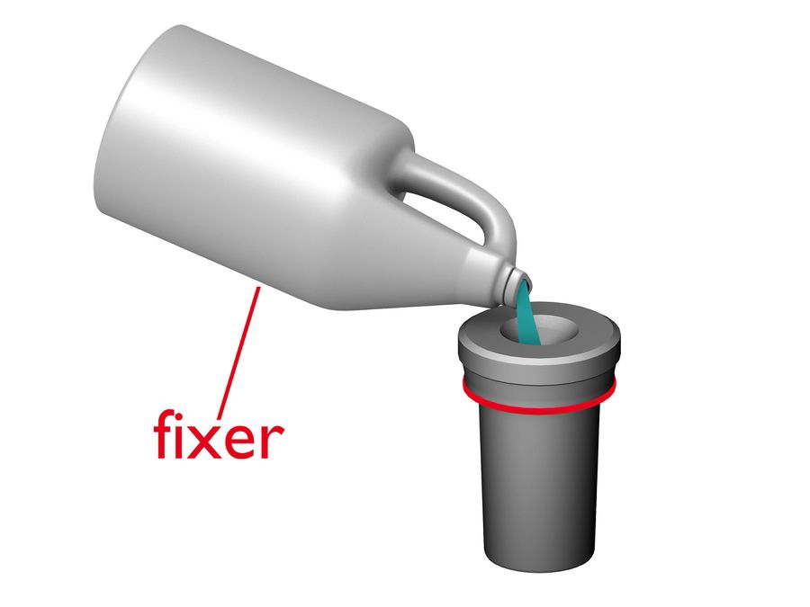
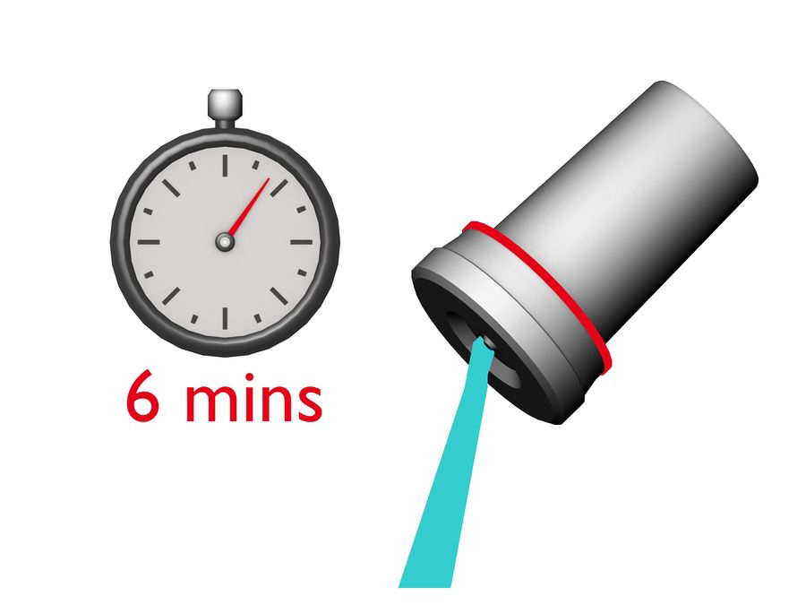
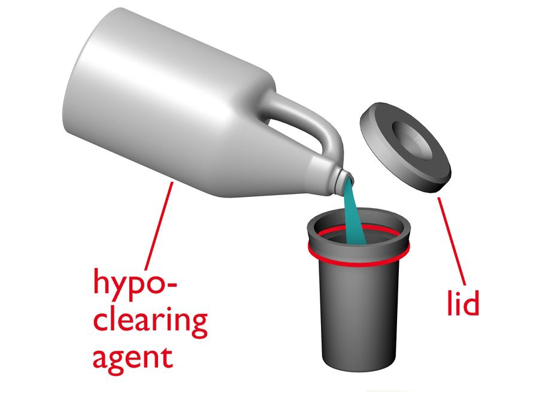
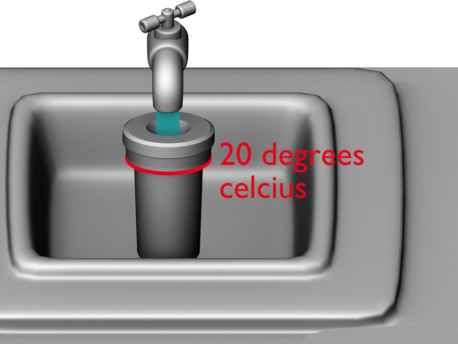

Pour the fixer into tank until it is full.
Assuming your fixer is pre-diluted, there is no need to dilute the fixer more, so you can pour straight from the gallon jug. Start the stopwatch once the tank is full. You are going to leave the film in the fixing solution for 6 minutes, as few as 4 for rapid fixer. Smack the tank against the counter to dislodge any bubbles. Agitate the film for 3 seconds every 30 seconds. Some people don't agitate during the fixing process. It is safe to open the tank completely after 3 minutes.

Once the stopwatch has reached 6 minutes, pour the fixer out of the tank.
Do not re-use the fixer. You can now unscrew the top of the developing tank and expose the film negative to light. Once the film has been "fixed", it is no longer light sensitive. The rest of the process is done with the lid of the developing tank off.

Pour the hypo-clearing agent into the tank (with the lid off).
There is no need to dilute the hypo-clearing agent more, so you can pour straight from the gallon jug. Smack the tank against the counter to dislodge any bubbles. You are going to leave the film in the hypo-clearing agent for 1 1/2 minutes. You can agitate the film a little bit if you like.

While the film is in the hypo-clearing agent, start running some water and bring the running water to 20 degrees Celsius.
After 1 1/2 minutes, dump out the hypo-clearing agent. Do not re-use this chemical. Put the developing tank under the running water. It's time to wash all the chemicals off the film. You are going to leave the film under the running water for 10 minutes. The water should fill up the developing tank and overflow. Let it overflow. Every couple of minutes, dump out the water and let the tank fill back up with fresh running water. You want to keep fresh 20-degree water pouring into the developing tank. This final washing part of the process is very important. Ten minutes is the minimum time to wash the film, but you can do it in a longer time. It is also important that you are washing the film with 20 degree water. Using hotter or colder water can affect the final picture.
